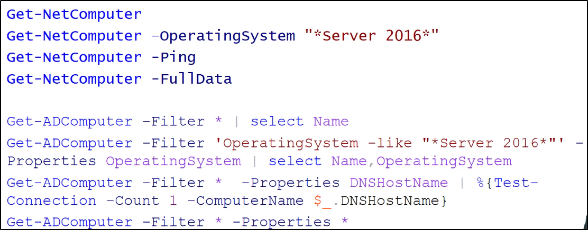

Ottieni la lista di computer presenti nel dominio corrente:
questo cercherà tutti gli oggetti del tipo "computer".
Ricorda di usare la -FullData per ottenre le info complete di Powerview!


Seleziona tutti i gruppi del dominio corrente:
Possiamo estrarre info da un dominio trusted usando l'opzione -Domain


Alcuni Admin solo trovabili nel Domain Controller:
Come gli Enterprise Admins!

Seleziona tutti i gruppi con "admin" presente nel nome
Ottieni i membri di un gruppo:
Alcuni membri di un gruppo potrebbero essere altri gruppi!
Per questo l'opzione -Recurse permette di enumerare tutti ricorsivamente!


Nota bene:
"IsGroup" indica se stiamo leggendo un gruppo (il quale fa parte del gruppo che stiamo leggendo!)
"Administrator", se non viene cambiato, è di default l'Admin del Dominio.
Anche se rinominato, è facile da identificare:
MemberSID si divide in 2 parti: S-1...-683 è il SID dell'elemento nel dominio,
mentre 500 è l'Object Identifier detto RID.
Il SID rende unico un elemento in un dominio, il RID lo rende unico in una foresta.
Quindi, se trovi RID uguali, anche con SID differenti, sono gli stessi oggetti nella foresta!

Ottieni la group membership di un singolo utente: